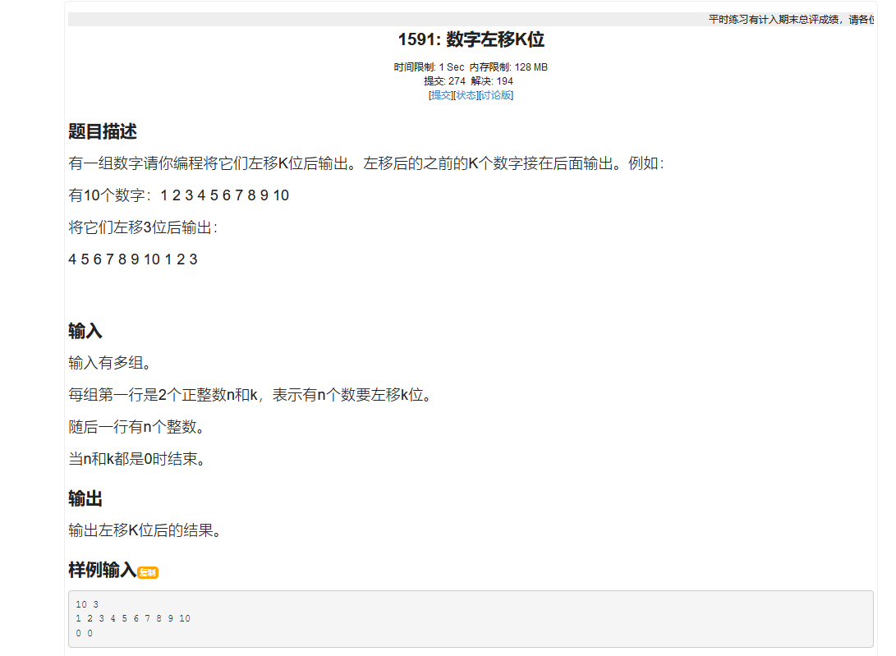

队列
队列是一种线型的结构，与栈不同，队列的数据是先进先出。
##数组单向队列
单向队列只能使用一次，即达到最大容量后无法继续增添删改，由Maxsize（最大容量），rear（队列尾）和front（队列头）三个变量进行数据的进队和出队
JAVA版代码实现
1
2
3
4
5
6
7
8
9
10
11
12
13
14
15
16
17
18
19
20
21
22
23
24
25
26
27
28
29
30
31
32
33
34
35
36
37
38
39
40
41
42
43
44
45
46
47
48
49
50
51
52
53
54
55
56
57
58
59
60
61
62
63
64
65
66
67
68
69
70
71
72
73
74
75
76
77
78
79
80
81
82
83
84
85
86
87
88
89
90
91
92
93
94
95
96
97
98
99
100
101
102
103
104
105
106
107
108
109
110
111
112
113
114
115
116
117
118
119
120
121
122
123
124
125
126
127
128
129$ public class Main
{
public static void main(String[] args)
{
//
ArrayQueue arrayQueue = new ArrayQueue(3);
char key=' ';
Scanner scanner = new Scanner(System.in);
boolean loop=true;
while(loop)
{
System.out.printf("s(show):显示队列\n");
System.out.printf("e(exit);退出\n");
System.out.printf("a(add):添加数据到队列\n");
System.out.printf("g(get):获取队列数据\n");
System.out.printf("h(head):获取队列头部\n");
key=scanner.next().charAt(0);
switch(key)
{
case 's':
arrayQueue.showQueue();
break;
case 'a':
System.out.printf("请输入一个数:\n");
int value = scanner.nextInt();
arrayQueue.addQueue(value);
break;
case 'g':
try{
int res=arrayQueue.getQueue();
System.out.printf("取出的数据是%d\n",res);
}catch(Exception e) {
//TODO: handle exception
System.out.println(e.getMessage());
}
break;
case 'h':
try{
int res=arrayQueue.headQueue();
System.out.printf("队列头的数据是%d\n",res);
}catch(Exception e) {
//TODO: handle exception
System.out.println(e.getMessage());
}
break;
case 'e':
scanner.close();
loop=false;
break;
default:
break;
}
}
System.out.printf("程序退出~~\n");
}
}
class ArrayQueue
{
private int maxSize;
private int front;
private int rear;
private int[] arr;
//创建队列的构造器
public ArrayQueue(int arrMaxSize)
{
maxSize=arrMaxSize;
arr=new int[maxSize];
front =-1;//指向队列的头部，分析出front是队列头的前一个位置
rear=-1;//指向队列尾，指向队列尾的数据
}
//判断队列是否满
public boolean isFull()
{
return rear==maxSize-1;
}
public boolean isEmpty()
{
return rear==front;
}
//添加数据到队列
public void addQueue(int n)
{
//判断队列是否满
if(isFull())
{
System.out.printf("队列满\n");
return;
}
rear++;//让rear后移
arr[rear]=n;
}
//出队列
public int getQueue()
{
if(isEmpty())
{
//抛出异常
throw new RuntimeException("队列空，不能获取数据");
}
front++;//后移到第一个
return arr[front];
}
public void showQueue()
{
if(isEmpty()) {
System.out.printf("队列为空，没有数据~~");
return;
}
for(int i=0;i<arr.length;i++) {
System.out.printf("arr[%d]=%d\n", i, arr[i]);
}
}
public int headQueue()
{
if(isEmpty())
{
throw new RuntimeException("空，没有数据");
}
return arr[front+1];
}
}
##环形队列
与单向队列不同，环形队列可以多次反复的使用，其原因是rear与front指针在指向下一个数组位置是都要对maxsize进行取余 因此可以反复使用
JAVA版代码实现
1 | $ public class Main |
##学校的OJ题

此题只需将 0-k-1 的数据入队，再将k-m的数据输出，再将 0-K-1的数据出队即可
1 | $import java.util.Scanner; |